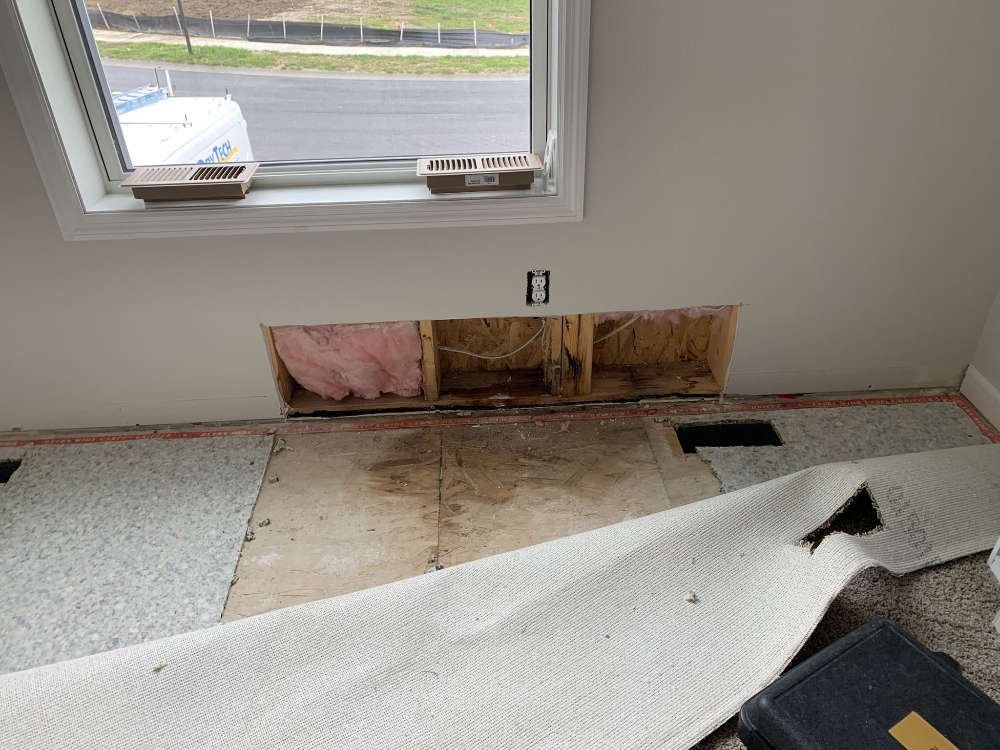
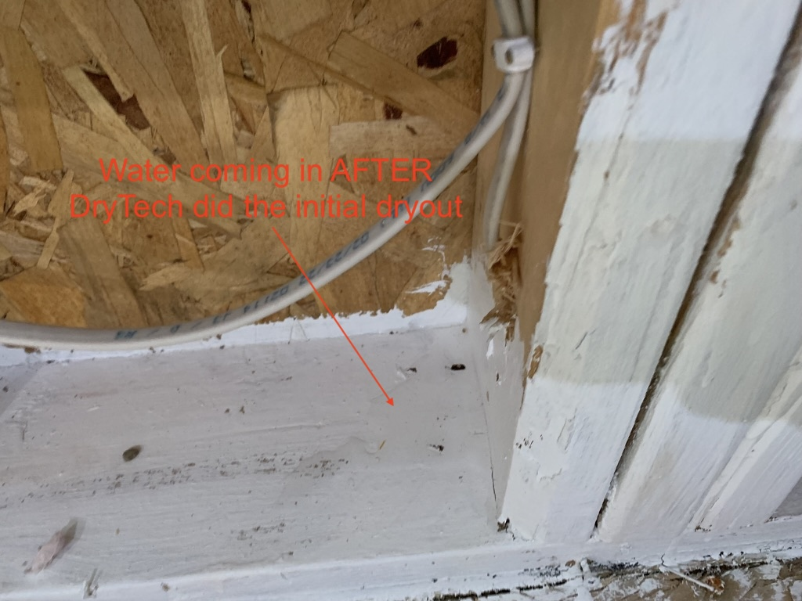

Flooded Bedroom | October, 2023
On a cold rainy evening in October we were putting our 1 year old to sleep. As we closed her window blinds we discovered a nightmare scenario - the floor was completely flooded in her room spanning the width of her room, and going out several feet.
If you've seen our other major and minor issues, you'll know that we've had our fair share of window issues. Many of the conversations have started with "If you left the window cracked open you will be responsible to cover this repair". To which I've always replied "of course, that would be my fault." Naturally I immediately checked the window - it was locked shut.
I immediately reached out to M/I Homes who were proactive in sending a company called DryTech to come remove the water. This involved them tearing out the carpet in that area, the trim, and the drywall. Additionally we had to run an industrial fan for several days in the room rendering our 1 year olds room unusable. After the repair was made the room was unusable for around two weeks as the drying out process was being done and the insulation was removed. The issue was found to be a gap or hole between the window and it's surrounding that was not properly covered when the home was build. They had to tear the exterior trim from the house to repair this, in addition to fixing the interior.
M/I Homes corrected this issue at no charge to us. Having future mold problems or this issue reoccurring is certainly worrisome for us.
 